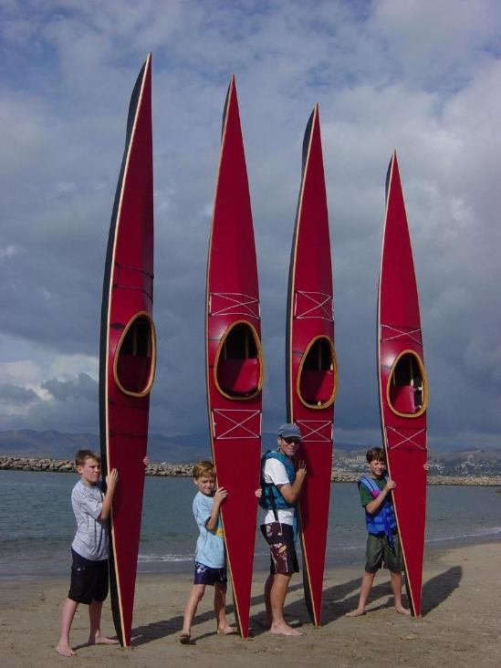

| Sea Pup ( Wood Frame) by Steve Phillips | Menu Last Page Next Page |
|  |
Several Sea Pups have been built as wood frame non-folders. In fact, any of the boats in this manual can be built as wood or aluminum frame non-folders. The wood frame/ PVC skin Sea Pup's pictured were built as a neighborhood father / son project headed up by Steve Phillips.
LOA - 14'9" Steve has written instructions for building a wood frame "non-folding" version of the Sea Pup. Sea Pup Wood Frame Building Instructions
|